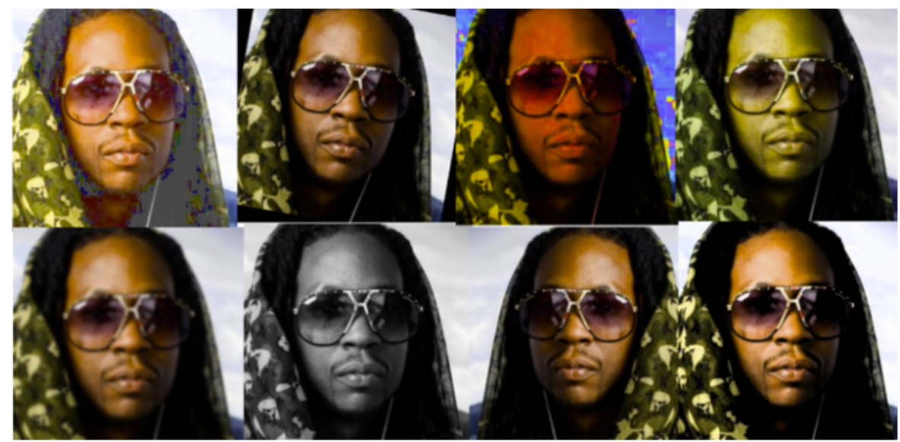
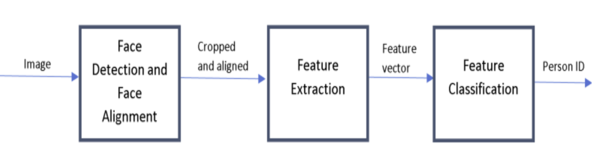

Face Recognition with MTCNN and VGCC_Face networks
One-Shot Face Recognition Problem
This project focuses on solving the one-shot face recognition problem using an experimental approach. Face recognition has always been one of the hottest topics in computer vision for decades. It is extremely useful in real-world applications, such as security, surveillance, robotics, etc. With the advanced algorithm development in computer vision, more and better methods have been proposed to address challenging face recognition problem, such as poor lighting, different facial poses, occlusions, etc.
Problem Description
The problem involves training a computer program with only one face image per subject and then using this program to recognize the remaining face images of these subjects. A public face database containing multiple face images from 100 subjects is utilized for this purpose. The images captured under diverse conditions pose a significant challenge for accurate recognition.
Approach and Models
To tackle the one-shot face recognition problem the following pretrained deep network models are used:
- Multitask Neural Network (MTCNN): Used for face detection and alignment.
- VGG-Face: Pretrained model employed for feature extraction.
These models are leveraged to examine their performance in the one-sample-per-person face recognition scenario.
Data Preparation
Data augmentation techniques are applied to address the limited number of images per person, enhancing representation across different illuminations and poses. Images are resized to [224,224,3] dimensions to facilitate feature extraction. Various data augmentation methods, including rotation, saturation, and brightness adjustment, are employed to generate additional instances.
Face Recognition Pipeline
The face recognition pipeline consists of the following steps:
Results
The baseline method, which employs a template matching approach, achieves an accuracy of 27.53%. In comparison, the proposed method utilizing deep learning techniques achieves an accuracy of 66.79%. While the proposed method outperforms the baseline, it falls short when compared to state-of-the-art methods in the domain. Further research is recommended to explore the applicability of deep learning for face recognition, particularly in the context of preprocessing techniques when dealing with one-instance-per-person problems.